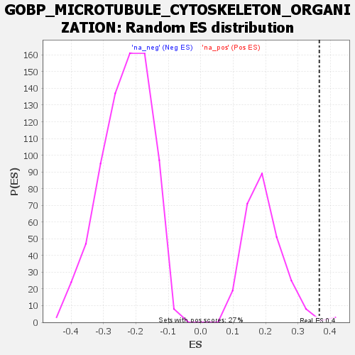

| | | Dataset | genes_ranked_stat_0.1 |
| Phenotype | NoPhenotypeAvailable |
| Upregulated in class | na_pos |
| GeneSet | GOBP_MICROTUBULE_CYTOSKELETON_ORGANIZATION |
| Enrichment Score (ES) | 0.36568013 |
| Normalized Enrichment Score (NES) | 1.8701859 |
| Nominal p-value | 0.011235955 |
| FDR q-value | 0.28136483 |
| FWER p-Value | 0.879 |
Table: GSEA Results Summary
 Fig 1: Enrichment plot: GOBP_MICROTUBULE_CYTOSKELETON_ORGANIZATION
Fig 1: Enrichment plot: GOBP_MICROTUBULE_CYTOSKELETON_ORGANIZATION
Profile of the Running ES Score & Positions of GeneSet Members on the Rank Ordered List

Fig 2: GOBP_MICROTUBULE_CYTOSKELETON_ORGANIZATION: Random ES distribution
Gene set null distribution of ES for GOBP_MICROTUBULE_CYTOSKELETON_ORGANIZATION